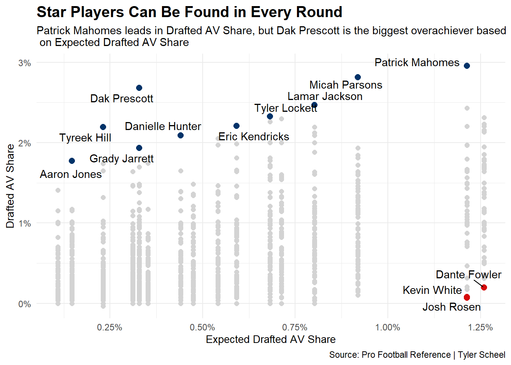
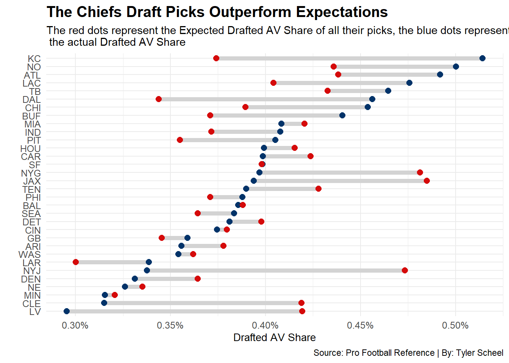

For many fans, the next NFL draft is the only sliver of hope in an otherwise bleak season. The potential of getting a top quarterback in April tempts failing franchises to lose every game on their schedule to make it happen. There are many factors involved in building a successful NFL franchise, but drafting well is vital to building a true dynasty. This begs the question, which franchises have drafted the best lately?
To help answer the question, I used the Pro Football Reference (PFR) statistic called Approximate Value (AV). AV is a method created by PFR founder Doug Drinen that calculates a number to represent the seasonal value of any NFL player. Career Approximate Value (cAV) is the accumulation of AV for a player throughout their career. The problem with using cAV to compare players is the number will be bigger for players who have been playing longer. According to the raw statistic, Demarcus Robinson (19 cAV) is a more valuable player than Garrett Wilson (8 cAV). I’d be willing to bet any NFL fan would rather have prime Garrett Wilson over prime Demarcus Robinson on their team. My solution to this problem was to calculate a draft class AV share. I simply added up the total cAV for every draft class, then divided each player’s drafted AV by that number.
Here’s an example. Jalen Ramsey, who was drafted in 2016, had an AV of 29 with the team that drafted him. The total drafted AV (DrAV) for the 2016 class is 2,870. 29 divided by 2,870 is 0.0101, so Jalen Ramsey’s Drafted AV Share is 1.01%. This percentage allows me to compare any player from any draft class.
But drafted AV itself doesn’t account for where the player was picked in the draft. We can’t expect a sixth round pick to perform at the same level as a first rounder. To get around this problem, I grouped every draft pick from 2015 to 2022 by pick range, then averaged the Drafted AV Share for each range to create the Expected Drafted AV Share. Here are the results.
Now all I had to do was to find the difference by subtracting the players’ Expected Drafted AV Share from their Drafted AV Share. This scatterplot shows every pick and their Expected Drafted AV Share vs Drafted AV Share. Highlighted are the top 10 biggest overachievers as well as the three biggest underachievers based on their pick range and Drafted AV Share.
Code
ggplot() +geom_point(data=PlayerDifference, aes(x=ExpDrAV, y=DrAVpct), color ="lightgrey", size =2) +geom_point(data=PlayerDifferenceTop, aes(x=ExpDrAV, y=DrAVpct), color ="#013369", size =2.5) +geom_point(data=PlayerDifferenceBottom, aes(x=ExpDrAV, y=DrAVpct), color ="#D50A0A", size =2.5) +geom_text_repel(data=PlayerDifferenceTop, aes(x=ExpDrAV, y=DrAVpct, label=Player), point.padding =3) +geom_text_repel(data=PlayerDifferenceBottom, aes(x=ExpDrAV, y=DrAVpct, label=Player)) +labs(x="Expected Drafted AV Share", y="Drafted AV Share", title="Star Players Can Be Found in Every Round", subtitle="Patrick Mahomes leads in Drafted AV Share, but Dak Prescott is the biggest overachiever based \n on Expected Drafted AV Share", caption="Source: Pro Football Reference | Tyler Scheel" ) +scale_x_continuous(labels = scales::percent) +scale_y_continuous(labels = scales::percent) +theme_minimal() +theme(plot.title =element_text(size =15, face ="bold"),axis.title =element_text(size =10.5),axis.text =element_text(size =9) )

It’s not surprising to see Josh Rosen has the biggest negative gap of any player since 2015 (-1.14%). The biggest overachiever according to this data is Dak Prescott, the 135th overall pick in 2016, who is 2.35% above his expected 0.33% Drafted AV Share.
After working with the player data, I grouped the picks by Franchise to see how their picks have panned out on the field. This dumbbell chart shows every NFL Franchise ordered by their average Drafted AV Share (blue dots). The red dots represent their average Expected Drafted AV Share.
Code
ggplot() +geom_dumbbell(data=TeamDifference, aes(y=reorder(Tm, AvgDrAVpct), x=AvgDrAVpct, xend=TmExpDrAV),size =2,colour ="lightgrey",colour_x ="#013369",colour_xend ="#D50A0A") +labs(x="Drafted AV Share",y="",title="The Chiefs Draft Picks Outperform Expectations", subtitle ="The red dots represent the Expected Drafted AV Share of all their picks, the blue dots represent \n the actual Drafted AV Share",caption="Source: Pro Football Reference | By: Tyler Scheel" ) +scale_x_continuous(labels = scales::percent) +theme_minimal() +theme(plot.title =element_text(size =15, face ="bold"),axis.title =element_text(size =10.5),axis.text =element_text(size =9.5) )

The Chiefs have the widest positive gap between the two stats, averaging 0.14% above expected. Patrick Mahomes and Tyreek Hill certainly pushed them over the edge in this stat. The widest negative gap belongs to the New York Jets, who average 0.14% below expected.
So now we know which franchises have been good at finding the diamond in the rough picks over the last 8 years, but which franchises are the most efficient with their picks? To answer this question I calculated a hit or miss category based on the +/- gap between expected and actual Drafted AV Share. This first table shows the top half of the league when it comes to hitting on draft picks.
Code
OvrTeamHitRate |>ungroup() |>top_n(16, wt=HitRate) |>gt() |>cols_label(Tm ="Team",HitRate ="Hit Rate" ) |>tab_header(title ="Chargers Draft Picks Hit More Than Any Other Franchise",subtitle ="Besides LA and Kansas City, the top half of the league in Hit Rate hover around 50% " ) |>tab_style(style =cell_text(color ="black", weight ="bold", align ="left"),locations =cells_title("title") ) |>tab_style(style =cell_text(color ="black", align ="left"),locations =cells_title("subtitle") ) |>tab_source_note(source_note =md("**By:** Tyler Scheel | **Source:** Pro Football Reference") ) |>tab_style(locations =cells_column_labels(columns =everything()),style =list(cell_borders(sides ="bottom", weight =px(3)),cell_text(weight ="bold", size=12) ) ) |>opt_row_striping() |>opt_table_lines("none") |>fmt_percent(columns =c(HitRate),decimals =2 ) |>tab_style(style =list(cell_fill(color ="#013369"),cell_text(color ="white") ), locations =cells_body(columns = HitRate,rows = HitRate <100 ))
Chargers Draft Picks Hit More Than Any Other Franchise
Besides LA and Kansas City, the top half of the league in Hit Rate hover around 50%
Team
Hit
Miss
TotalPicks
Hit Rate
LAC
39
18
57
68.42%
KC
35
23
58
60.34%
IND
38
31
69
55.07%
ATL
30
25
55
54.55%
PIT
33
28
61
54.10%
WAS
38
33
71
53.52%
DAL
37
33
70
52.86%
TB
31
28
59
52.54%
DET
34
31
65
52.31%
HOU
28
26
54
51.85%
ARI
30
28
58
51.72%
LAR
35
33
68
51.47%
CHI
29
28
57
50.88%
MIA
29
29
58
50.00%
GB
36
37
73
49.32%
CIN
35
36
71
49.30%
By: Tyler Scheel | Source: Pro Football Reference
Two AFC West teams stand out at the top of that chart, one is a bit more surprising than the other. I’ll let you decide which one. A majority of the league hits about 50% of their picks. Which shows how difficult evaluating a player’s value out of college can be.
Code
OvrTeamHitRate |>ungroup() |>top_n(16, wt=-HitRate) |>gt() |>cols_label(Tm ="Team",HitRate ="Hit Rate" ) |>tab_header(title ="Raiders and Browns Fans, Cover Your Eyes",subtitle ="The bottom half of the league features 5 teams under 40%" ) |>tab_style(style =cell_text(color ="black", weight ="bold", align ="left"),locations =cells_title("title") ) |>tab_style(style =cell_text(color ="black", align ="left"),locations =cells_title("subtitle") ) |>tab_source_note(source_note =md("**By:** Tyler Scheel | **Source:** Pro Football Reference") ) |>tab_style(locations =cells_column_labels(columns =everything()),style =list(cell_borders(sides ="bottom", weight =px(3)),cell_text(weight ="bold", size=12) ) ) |>opt_row_striping() |>opt_table_lines("none") |>fmt_percent(columns =c(HitRate),decimals =2 ) |>tab_style(style =list(cell_fill(color ="#D50A0A"),cell_text(color ="white") ), locations =cells_body(columns = HitRate,rows = HitRate <100 ))
Raiders and Browns Fans, Cover Your Eyes
The bottom half of the league features 5 teams under 40%
Team
Hit
Miss
TotalPicks
Hit Rate
BUF
28
29
57
49.12%
CAR
27
29
56
48.21%
NO
23
25
48
47.92%
SEA
33
36
69
47.83%
BAL
36
40
76
47.37%
DEN
33
37
70
47.14%
PHI
26
30
56
46.43%
MIN
39
46
85
45.88%
SF
32
38
70
45.71%
NYG
27
34
61
44.26%
TEN
25
36
61
40.98%
NE
28
43
71
39.44%
NYJ
23
37
60
38.33%
JAX
24
40
64
37.50%
CLE
24
52
76
31.58%
LV
19
45
64
29.69%
By: Tyler Scheel | Source: Pro Football Reference
The bottom 5 are all under 40%. Some are familiar favorites like the Cleveland Browns, some, like the New England Patriots, are new to the depressing franchise club. The Las Vegas Raiders take the cake with a dismal 29.69% hit rate, and have only hit on 2 of their last 10 first round picks.
It’s worth noting that this blog is strictly looking at pick/player value, there are a lot of other factors in a franchise besides drafts. Like I anticipated before I started this project, the Kansas City Chiefs have been the best-drafting franchise in the last 8 years. Their combination of home run draft picks and high overall hit rate has built a Super Bowl caliber roster year after year.